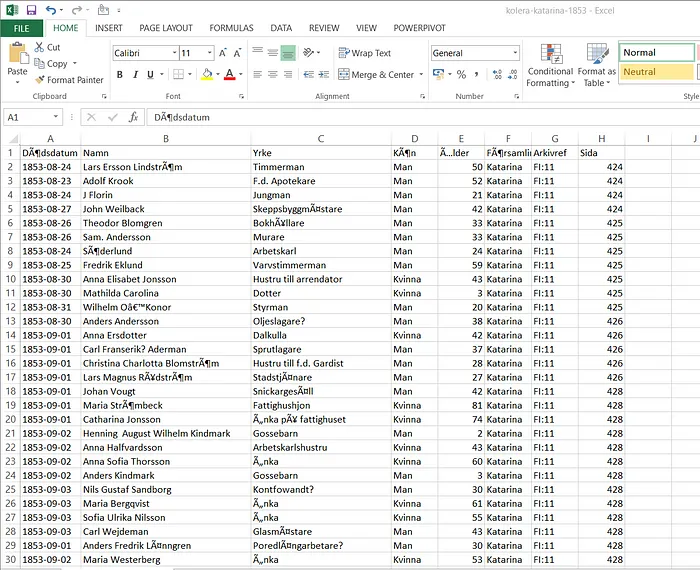
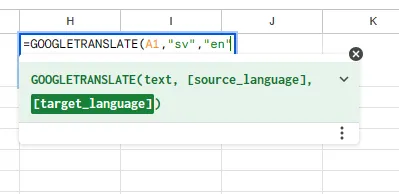
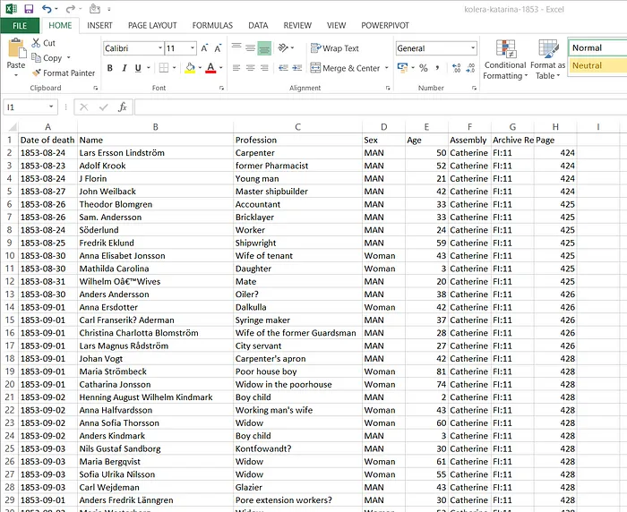
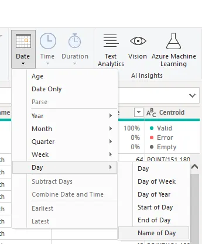
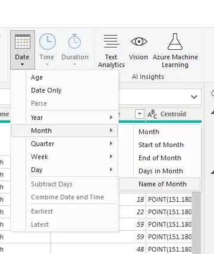

Cholera Outbreak, Stockholm, 1853
Cholera Outbreak, Stockholm, 1853: Data Analysis

The importance of data analysis is limitless. It is widely known to be helpful in decision making process, however, its usefulness goes beyond this. Data Analysis is important for studying and understanding past events, identifying how past events were handled and ultimately, make important decisions that will prevent repetitions of similar events and to ensure that future performance exceed the previous ones. Analysis of past events may also be useful for documenting the details of past occurrences.
This analysis therefore seeks to obtain information about the outbreak of cholera in Stockholm in the year 1853.
Data Source: Quantum Analytics NG
Tools Used: Microsoft Excel, Microsoft Query Editor,Tableau
Objective: To understand the occurrence, trend and gravity of cholera outbreak in Stockholm.
The 1853 Stockholm cholera outbreak was a severe epidemic which occurred in Stockholm, Sweden in 1853. This was an historical event which happened as a result of a waterborne disease, caused by a bacterium that led to severe diarrhea and dehydration.
DATA OVERVIEW
The Dataset used in this Analysis may be limited in several ways because it was collected in a church environment by writing. The data was put together in Saint Catherine Parish in Stockholm. The data contained a total of 8 columns and 248 rows with each row containing information of a victim that died as a result of cholera outbreak in the community. The colums hold information about:
Dödsdatum (Date of death)
Namn (Name)
-Yrke (Profession)
- Kön (Sex)
- Ã…lder (Age)
- Församling (Assembly)
- Arkivref (Archive) - Sida (Ref Page)
DATA CLEANING AND ANALYSIS
The dataset given was in Swedish Language, and for smooth and easy analysis, I started by translating this from Swedish to English.
I copied the given data from the excel file, opened Google Sheets and pasted the data. After copying, I moved to the next empty column and typed in the function to translate the document.
Note that: Source Language — Swedish and the Target Language — English. These are represented as “sv” and “en” respectively while translating using Google Sheets.
Hence, the function: =GOOGLE TRANSLATE(reference_cell, “sv”,”en”) was used to translate the document from Swedish to English.
And hence, a translated version of the data was obtained.
I created several other Columns like “Month Name”, “Day Name”, and a conditional Column named “Age Categories”. To categorize the ages into groups, I used a conditional column.
If Age ≤ 18- Children
Age ≤ 40-Young Adults
Age ≤ 59- Middle Aged
Age > 60-Elderly
More columns were inserted to populate months and days in order to determine the trend of occurrence across different time frames. This was done by highlighting the column that contained the date of death, and selecting the date button. The name of day, and name of month was then obtained.

DATA VISUALIZATION
after data Transformation with power query Editor, I uploaded the dataset to tableau dextop which i used for this visualization .
The(KPIs) were calculated using the Tableau measures. The formulars used are as follows:
-Total No. Cases = COUNT(cholera)
-Total # of Adults = COUNT(if [Age]> 17 then 1 END)
-Total # of Children = COUNT(if [Age] < 17 then 1 END)
-Total# of Males = COUNT(if CONTAINS([Gender],"M") then 1 END)
-Total# of females = COUNT(if CONTAINS([Gender],"F") then 1 END)
FINDINGS
-248 cases were recorded with a total of 130 female deaths and 118 male deaths. Hence, more Females died as a result of cholera outbreak in Stockholm, Sweden than Males
- The outbreak of took place within a period of 4 months: August, September, October and November with the highest death recorded in September(183) and the least death recorded in November(11).
- Children, house wives,enemployed and retiree were most were affected among all the proffession by this outbreak.
-Middle aged with 85 deaths and young adults with 81 death have the highest number of deaths
Thanks
Cholera Outbreak, Stockholm, 1853
- Category Tableau Project
- Project URL Tableau Public
- Visit Github
- More tableau projects